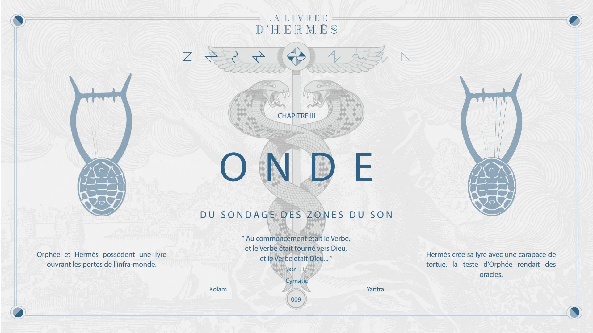
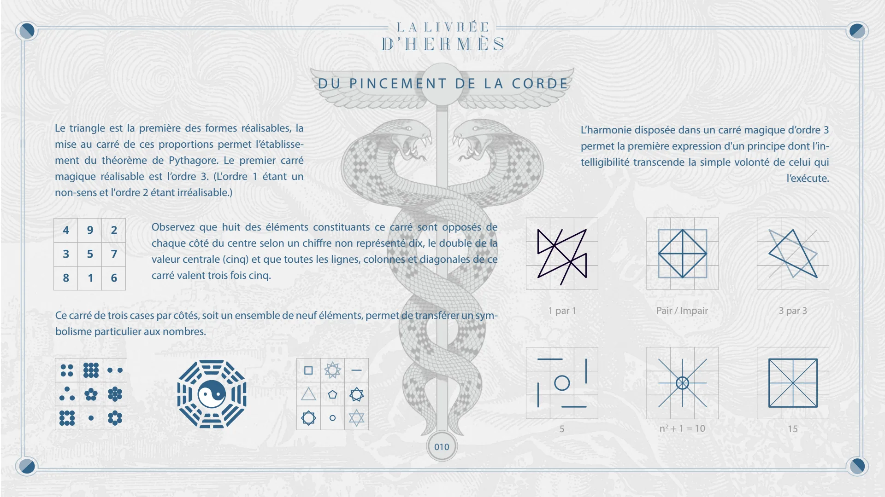
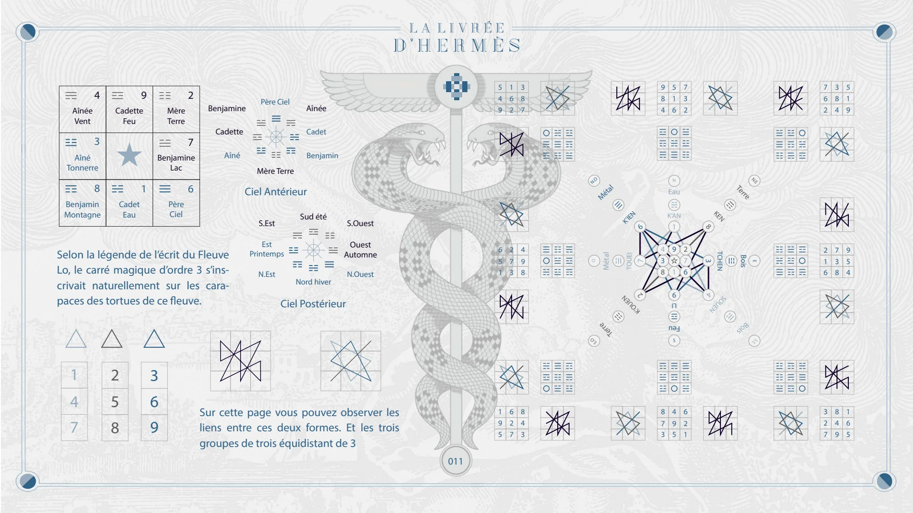
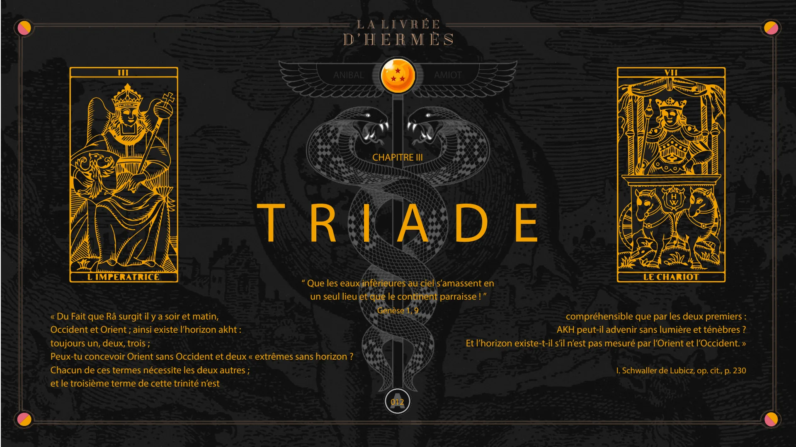
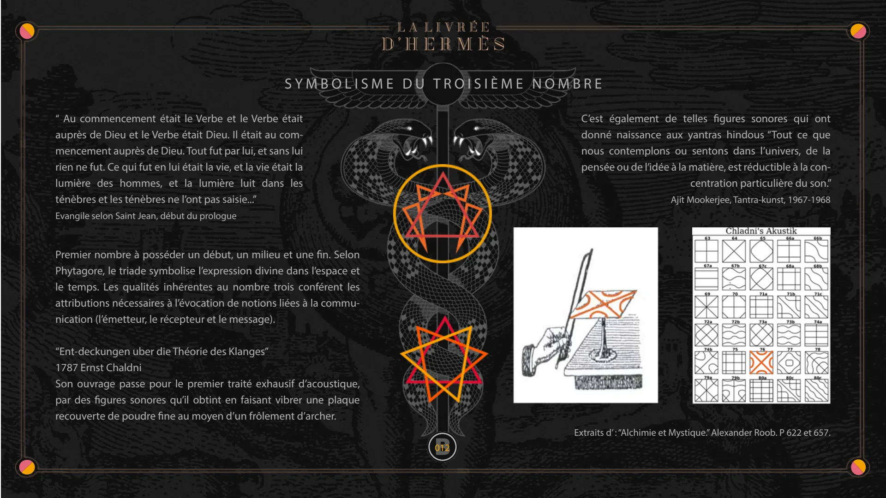
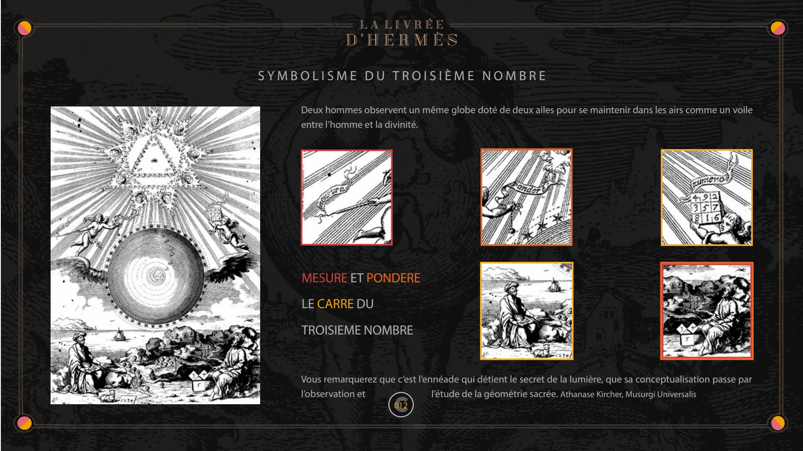

Chapitre III — Onde, Triade
Pages 009 à 012C du livre · chapitre 3 sur 7
Chapitre III de La Livrée d'Hermès : Onde et Triade. Le sondage des zones du son, le carré magique d'ordre 3 et l'écrit du fleuve Lo, puis le symbolisme du troisième nombre.

CHAPITRE III
ONDE
DU SONDAGE DES ZONES DU SON
Orphée et Hermès possédent une lyre ouvrant les portes de l’infra-monde.
“ Au commencement était le Verbe, et le Verbe était tourné vers Dieu, et le Verbe était Dieu... ”
Jean 1, 1 Cymatic
Hermès crée sa lyre avec une carapace de tortue, la teste d’Orphée rendait des oracles.
Kolam 009 Yantra

DU PINCEMENT DE LA CORDE
Le triangle est la première des formes réalisables, la mise au carré de ces proportions permet l’établissement du théorème de Pythagore. Le premier carré magique réalisable est l’ordre 3. (L'ordre 1 étant un non-sens et l'ordre 2 étant irréalisable.)
Observez que huit des éléments constituants ce carré sont opposés de chaque côté du centre selon un chiffre non représenté dix, le double de la valeur centrale (cinq) et que toutes les lignes, colonnes et diagonales de ce carré valent trois fois cinq.
Ce carré de trois cases par côtés, soit un ensemble de neuf éléments, permet de transférer un symbolisme particulier aux nombres.
1 par 1
L’harmonie disposée dans un carré magique d’ordre 3 permet la première expression d'un principe dont l’intelligibilité transcende la simple volonté de celui qui l’exécute.
Pair / Impair 3 par 3 010 5
n2 + 1 = 10
15

Aînée Vent 4 9 Cadette Feu Mère Terre 2 Benjamine Père Ciel Aînée Anibal AMIOT 3 7 Cadette Aîné Tonnerre Benjamine Lac Aîné 8 1 6 Benjamin Montagne Cadet Eau Père Ciel
Selon la légende de l’écrit du Fleuve Lo, le carré magique d’ordre 3 s’inscrivait naturellement sur les carapaces des tortues de ce fleuve.
Cadet Benjamin Mère Terre Ciel Antérieur S.Est Sud été S.Ouest Est Printemps Ouest Automne N.Est Nord hiver Ciel Postérieur N.Ouest 5 4 9 6 5 1 1 6 2 2 7 3 3 8 7 4 9 8 N.O Métal O Métal Terre S.O
K’IEN
6
TOUEI
7
2 K’OUEN
9 8 4 4 3 8 5 1 6 N Eau K’AN 1 9 1 9 LI Feu S 7 3 2 2 7 6 KEN 8 3
TCHEN
4 SOUEN
Terre N.E Bois Bois E S.E 7 6 2 2 1 6 3 8 4 7 3 8 5 1 9 9 5 4 1 4 7 2 5 8 3 6 9
Sur cette page vous pouvez observer les liens entre ces deux formes. Et les trois groupes de trois équidistant de 3
1 9 5 6 2 7 8 4 3 8 7 3 4 9 5 6 2 1 3 2 7 8 4 9 1 6 5 011

CHAPITRE III
TRIADE
ANIBAL
AMIOT
“ Que les eaux infèrieures au ciel s’amassent en un seul lieu et que le continent parraisse ! ” Genèse 1, 9
« Du Fait que Râ surgit il y a soir et matin, Occident et Orient ; ainsi existe l’horizon akht : toujours un, deux, trois ; Peux-tu concevoir Orient sans Occident et deux « extrêmes sans horizon ? Chacun de ces termes nécessite les deux autres ; et le troisième terme de cette trinité n’est compréhensible que par les deux premiers : AKH peut-il advenir sans lumière et ténèbres ? Et l’horizon existe-t-il s’il n’est pas mesuré par l’Orient et l’Occident. »
I. Schwaller de Lubicz, op. cit., p. 230
A 012

SYMBOLISME DU TROISIÈME NOMBRE
“ Au commencement était le Verbe et le Verbe était auprès de Dieu et le Verbe était Dieu. Il était au commencement auprès de Dieu. Tout fut par lui, et sans lui rien ne fut. Ce qui fut en lui était la vie, et la vie était la lumière des hommes, et la lumière luit dans les ténèbres et les ténèbres ne l’ont pas saisie...”
Evangile selon Saint Jean, début du prologue
Premier nombre à posséder un début, un milieu et une fin. Selon Phytagore, le triade symbolise l’expression divine dans l’espace et le temps. Les qualités inhérentes au nombre trois conférent les attributions nécessaires à l’évocation de notions liées à la communication (l’émetteur, le récepteur et le message).
“Ent-deckungen uber die Théorie des Klanges”
1787 Ernst Chaldni Son ouvrage passe pour le premier traité exhausif d’acoustique, par des figures sonores qu’il obtint en faisant vibrer une plaque recouverte de poudre fine au moyen d’un frôlement d’archer.
B
C’est également de telles figures sonores qui ont donné naissance aux yantras hindous “Tout ce que nous contemplons ou sentons dans l’univers, de la pensée ou de l’idée à la matière, est réductible à la concentration particulière du son.” Ajit Mookerjee, Tantra-kunst, 1967-1968
Extraits d’ : “Alchimie et Mystique.” Alexander Roob. P 622 et 657.
012

SYMBOLISME DU TROISIÈME NOMBRE
Deux hommes observent un même globe doté de deux ailes pour se maintenir dans les airs comme un voile entre l’homme et la divinité.
MESURE ET PONDERE LE CARRE DU
TROISIEME NOMBRE
Vous remarquerez que c’est l‘ennéade qui détient le secret de la lumière, que sa conceptualisation passe par l’observation et l’étude de la géométrie sacrée. Athanase Kircher, Musurgi Universalis
C 012
© Anibal Edelberto Amiot. CC BY-NC 4.0 — creativecommons.org/licenses/by-nc/4.0 · DOI 10.5281/zenodo.22722485